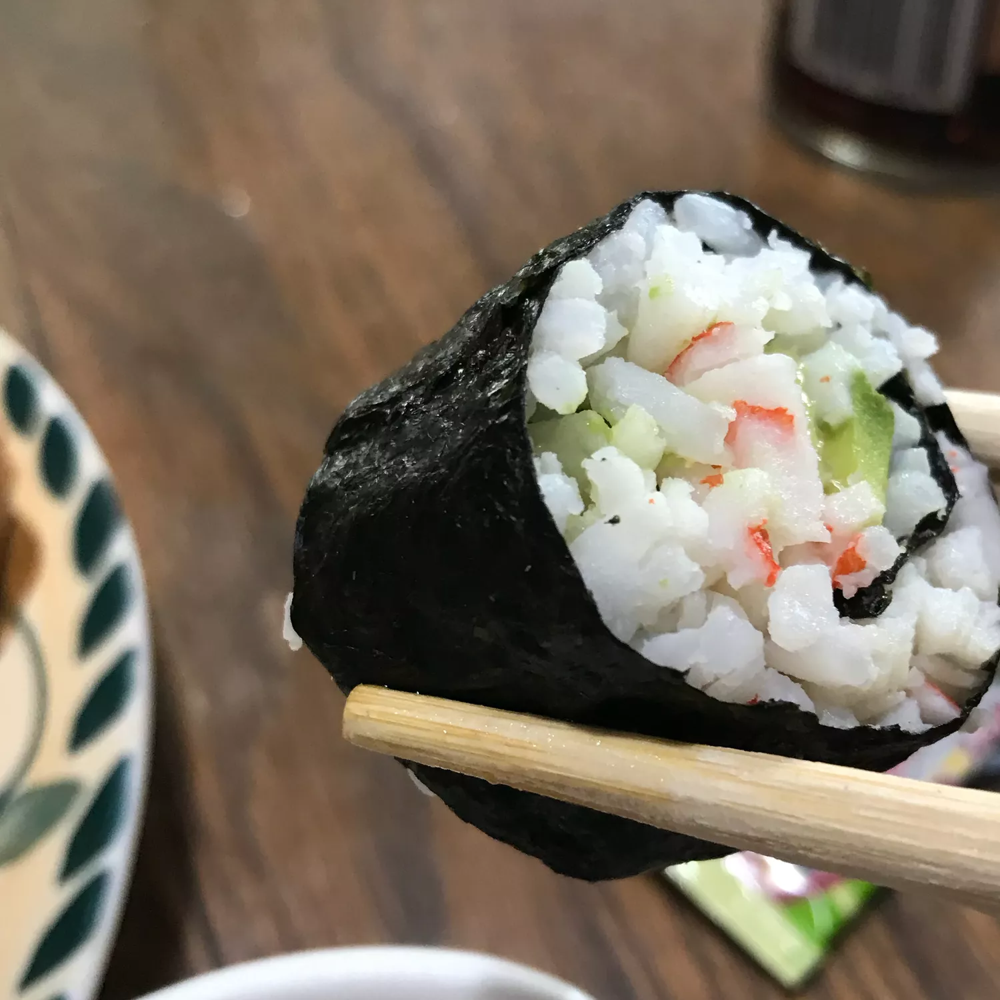

Homemade Sushi

Description
This recipe will demonstrate a step by step process to construct your own delicious sushi rolls.
The preparation times are as followed:
- 40 minutes prep time
- 25 minutes cook time
Ingredients
- 1 1/3 cups of water
- 2/3 cup uncooked short-grain white rice
- 3 tablespoons rice vinegar
- 3 tablespoons white sugar
- 1 1/2 teaspoons salt
- 4 sheets nori seaweed sheets
- 1/2 pound imitation crabmeat
- 1 avocado, peeled, sliced
- 2 tablespoons pickled ginger
Steps
- Preheat the oven to 300 degrees F (150 degrees C).
- Bring water to a boil in a medium pot; stir in rice. Reduce heat to medium-low, cover, and simmer until rice is tender and water has been absorbed, 20 to 25 minutes.
- Mix rice vinegar, sugar, and salt in a small bowl. Gently stir into cooked rice in the pot and set aside.
- Lay nori sheets on a baking sheet.
- Heat nori in the preheated oven until warm, 1 to 2 minutes.
- Center 1 nori sheet on a bamboo sushi mat. Use wet hands to spread a thin layer of rice on top. Arrange 1/4 of the crabmeat, avocado, cucumber, and pickled ginger over rice in a line down the center. Lift one end of the mat and roll it tightly over filling to make a complete roll. Repeat with remaining ingredients.
- Use a wet, sharp knife to cut each roll into 4 to 6 slices